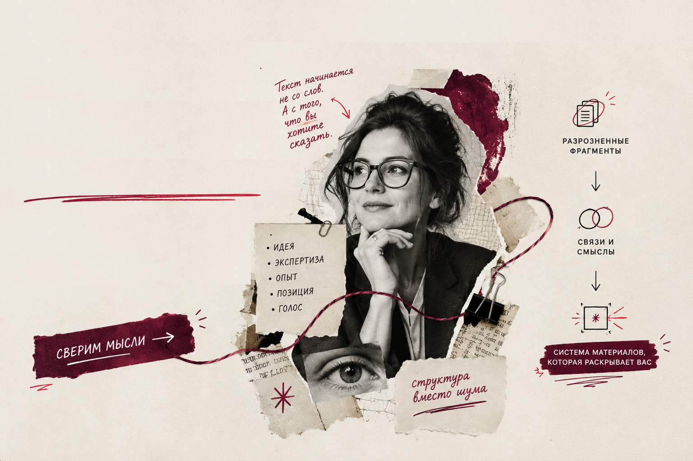
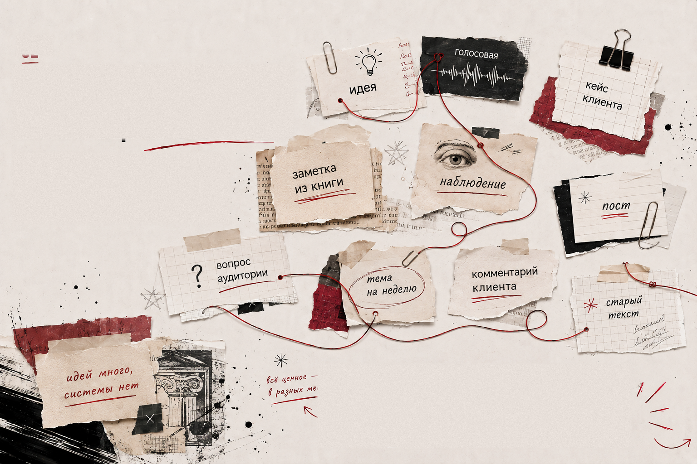
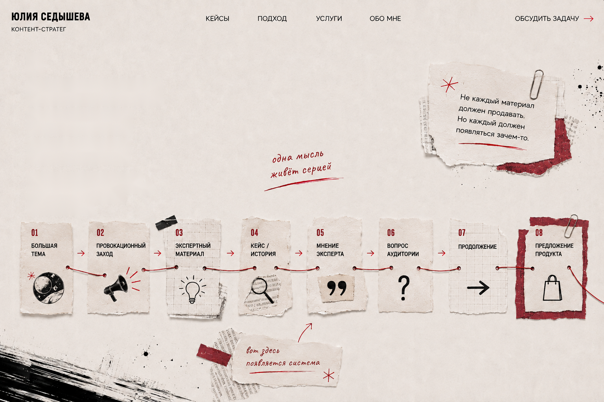
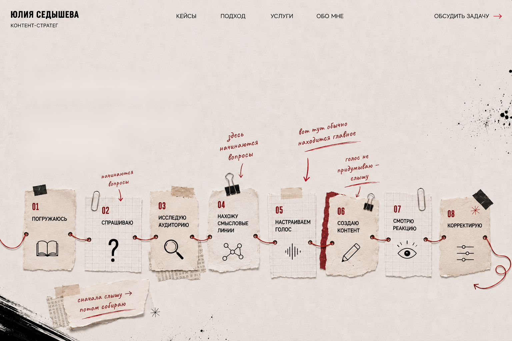
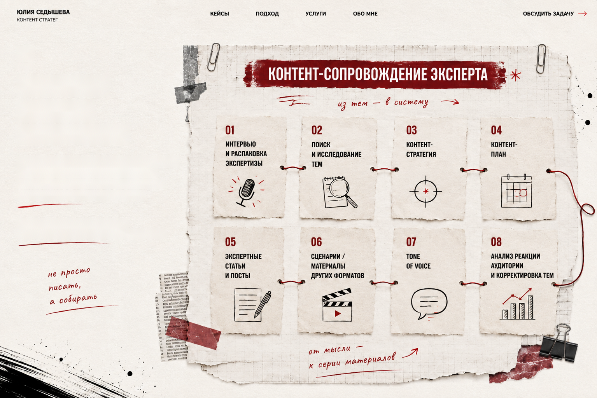
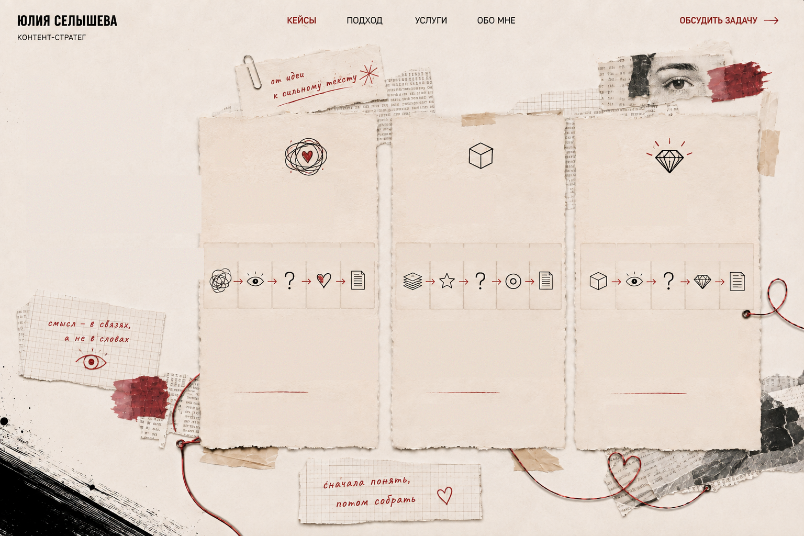
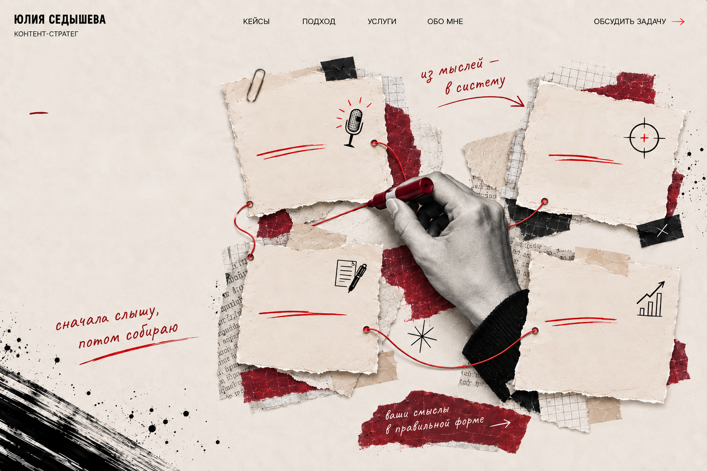

Знания видят.
Человека запоминают.
Помогаю сделать видимым то,
что обычно остаётся за вашей экспертностью:
собственный взгляд, характер, опыт
и способ думать.

02У вас много материала. Но это ещё не система.
У вас уже есть опыт, клиенты, обучение,
заметки, наблюдения и собственная позиция.
А потом наступает вторник — и снова
возникает вопрос: «О чём писать сегодня?»
Много хороших постов — ещё не контент-система.

03Что я называю системным контентом.
Один материал продолжает другой.
Так эксперт раскрывается постепенно,
а большая мысль не теряется
после одного поста.

04Как я работаю.
Мне не нужно научиться говорить вместо вас. Мне нужно научиться хорошо вас слышать.
Мне необязательно заранее разбираться
в вашей сфере. Мне должно быть интересно
в ней разобраться.

05Что можно передать мне в работу.
Главная услуга — контент-сопровождение эксперта.
Внутри неё я помогаю собрать темы, смыслы,
структуру и сами материалы так, чтобы контент
не распадался на случайные публикации.
Это не набор разрозненных услуг. Это одна система работы с вашим контентом.

06Кейсы.
Здесь не просто готовые тексты.
Показываю, что было в материале,
что я заметила, какой вопрос задала,
какую мысль нашла и во что её собрала.
Важен не только результат,
но и ход мысли.
Психологическая практика
Превратила разрозненные идеи и заметки
в систему смыслов и понятный текст,
который помогает клиенту говорить
о своей практике уверенно и по делу.
Экспертный B2B-контент
Собрала сложную экспертизу в ясную
структуру и убедительный текст,
который работает на доверие
и поддержку решения.
Премиальный продукт
Выделила суть продукта и ценность
для аудитории, создала текст, который
подчёркивает уровень и закрывает
ключевые возражения.
Что меняется, когда контент собран в систему
Я не просто пишу тексты.
Я связываю темы, смыслы и цели,
чтобы контент работал на ваш проект
долго, последовательно
и с понятным результатом.
моя задача —
не писать за вас,
а настроить систему,
которая работает
на вас
Темы живут отдельно
и не складываются в общую картину.
Каждый пост начинается с нуля,
идеи приходится искать заново.
Экспертный голос скачет,
вас трудно запомнить.
Контент трудно продолжать,
нет ощущения направления.
Продажа появляется внезапно
и воспринимается как навязчивая.
Контент есть.
Но он не работает на систему.
Темы связаны между собой
и ведут аудиторию по понятному пути.
Одна мысль живёт серией —
её легко развивать.
Ваш голос узнаваем,
человеку хочется вас читать.
Каждый следующий материал
логично вытекает из предыдущего.
Предложение продукта появляется
вовремя и воспринимается естественно.
Контент работает.
Поддерживает, привлекает и продаёт.
Контент перестаёт быть обязанностью.
Он становится продолжением вашей работы.

08Что делаю и как помогаю.
Собираю ваши мысли, опыт
и задачи в систему контента,
которая работает на вас.
Распаковкаинтервью
Достаю темы, смыслы
и ваш настоящий голос.
Контент-стратегия
Связываю темы
в понятную систему.
Текстыи материалы
Пишу в вашем голосе
и под вашу задачу.
Корректировкаи развитие
Смотрю на реакцию
и развиваю то,
что работает.